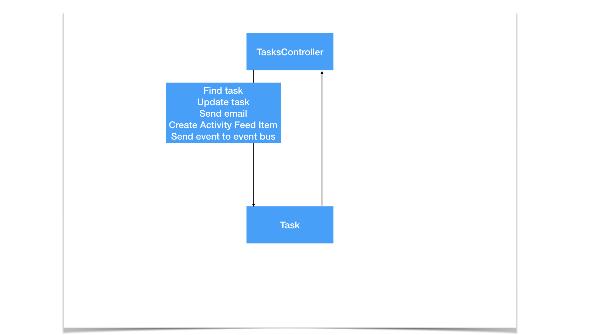
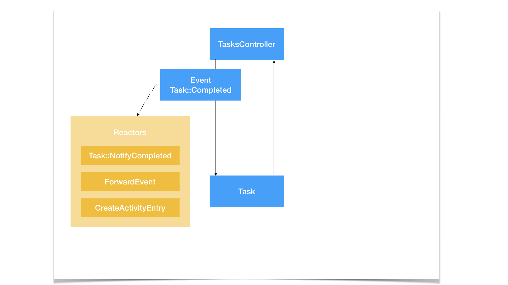
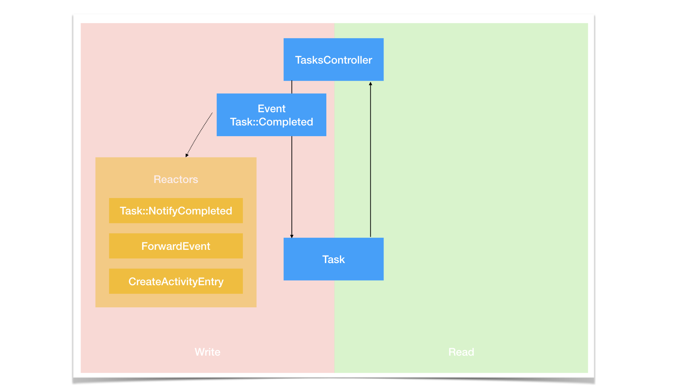
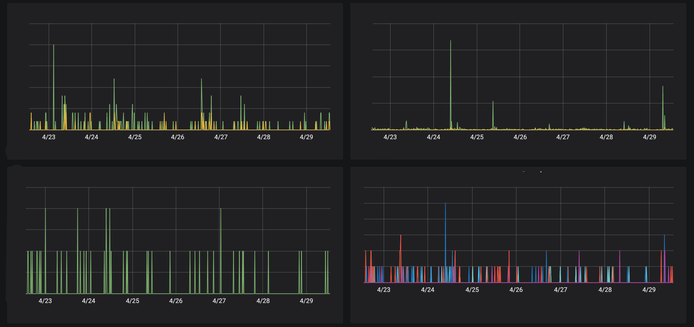
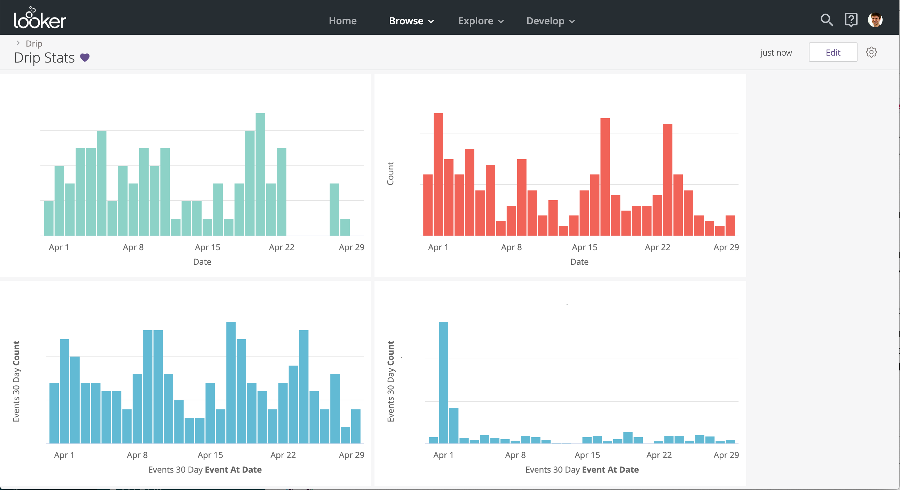
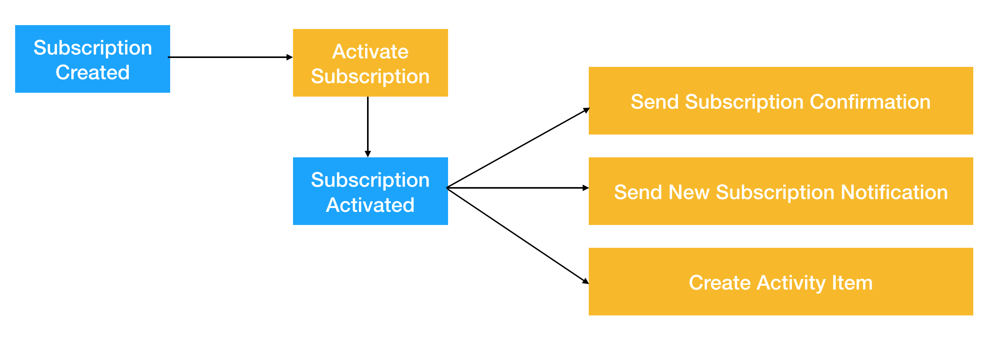
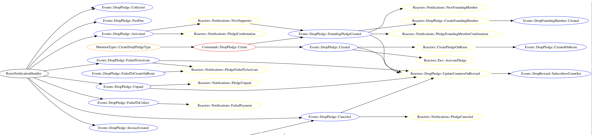
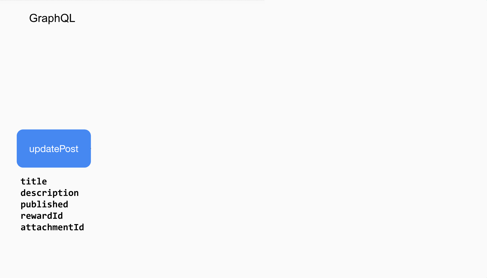
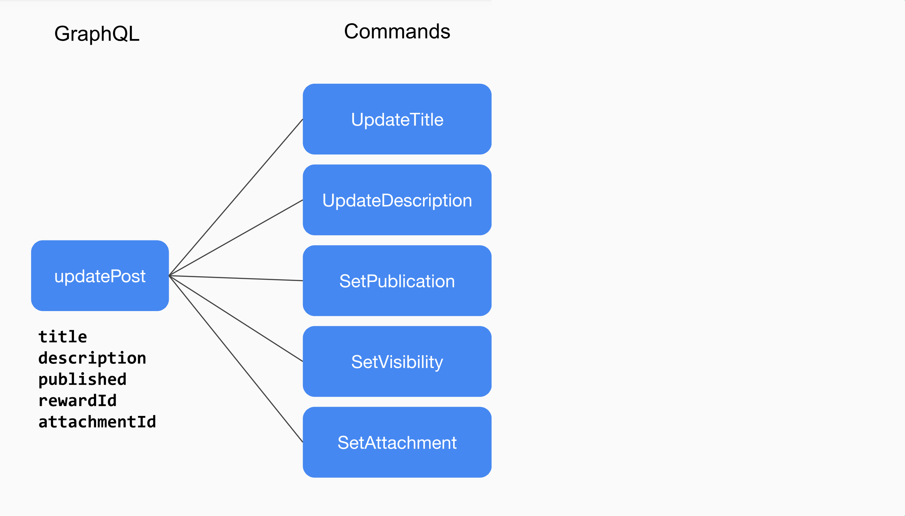
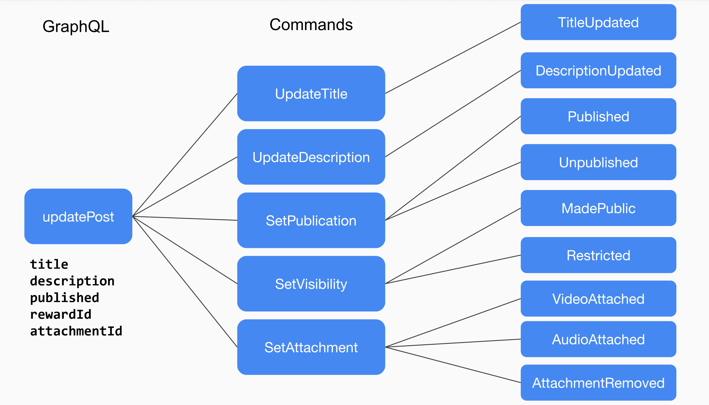

class: center, middle # Event Sourcing Made Simple Philippe Creux – RailsConf 2019 <small>pcreux.com</small> --- class: center, middle # Let's build a TODO™ app together # 🤓 --- class: middle # `rails new todoz` --- class: middle ```ruby class Task < ApplicationRecord end ``` --- class: middle ```ruby class TasksController < ApplicationController def index # ... end def show # ... end def create # ... end end ``` --- # ✅ Complete a task --- # ✅ Complete a task ```ruby class TasksController < ApplicationController # ... def complete task = Task.find(params[:id]) task.update!(completed: true) render json: task end # ... end ``` --- # Let's record the completion date --- # Let's record the completion date ```ruby class TasksController < ApplicationController # ... def complete task = Task.find(params[:id]) task.update!(completed_at: Time.now) render json: task end # ... end ``` --- # Let's record the completion date ```ruby class AddCompletedAtToTasks < ActiveRecord::Migration[6.0] def up add_column 'tasks', :completed_at, :datetime Task.where(completed: true).find_each do |task| task.update!(completed_at: ???) end remove_column 'tasks', :completed end end ``` --- # I want to know who completed a given task --- # I want to know who completed a given task ```ruby class TasksController < ApplicationController # ... def complete task = Task.find(params[:id]) task.update!(completed_at: Time.now, completed_by: current_user) render json: task end # ... end ``` --- # I want to know who completed a given task ```ruby class AddCompletedByToTasks < ActiveRecord::Migration[6.0] def up add_column 'tasks', :completed_by_id, :integer Task.completed.find_each do |task| task.update!(completed_by: ???) end end end ``` --- # Let's add some event tracking ```ruby class TasksController < ApplicationController # ... def complete task = Task.find(params[:id]) task.update!(completed_at: Time.now, completed_by: current_user) track_event("Task completed", task_id: task.id, user_id: current_user.id) render json: task end # ... end ``` --- # ... and email notifications ```ruby class TasksController < ApplicationController # ... def complete task = Task.find(params[:id]) task.update!(completed_at: Time.now, completed_by: current_user) if task.created_by != current_user TaskMailer.queue_task_completed(task: task, recipient: task.created_by) end track_event("Task completed", task_id: task.id, user_id: current_user.id) render json: task end # ... end ``` --- # ... and an activity feed ```ruby class TasksController < ApplicationController # ... def complete task = Task.find(params[:id]) task.update!(completed_at: Time.now, completed_by: current_user) if task.created_by != current_user TaskMailer.queue_task_completed(task: task, recipient: task.created_by) end Activity.create!(subject: task, who: current_user, action: :completed) track_event("Task completed", task_id: task.id, user_id: current_user.id) render json: task end # ... end ``` --- class: center, middle # 👋 Philippe Creux --- class: center, middle # Kickstarter --- class: center, middle # Kickstarter is turning 10 today! # 🎂 --- class: center, middle # 🎂 Kickstarter **162,000+ creative projects** brought to life <br/> thanks to **16,000,000+ backers** <br/> who've raised **$4,250,000,000+** <br/> --- class: center, middle # Event Sourcing Made Simple Philippe Creux – RailsConf 2019 pcreux.com --- class: center, middle # What is Event Sourcing? ??? The application state is the result of a sequence of events --- ## Application State ``` ``` ## Events --- ## Application State ``` ``` ## Events 1. `Task Created` * `title: "Prepare sides"` --- ## Application State ``` □ Task #123: "Prepare sides" ``` ## Events 1. `Task Created` * `title: "Prepare sides"` --- ## Application State ``` □ Task #123: "Prepare sides" ``` ## Events 1. `Task Created` * `title: "Prepare sides"` 2. `Task Due Date Set` * `date: "2019-04-20"` --- ## Application State ``` □ Task #123: "Prepare sides" Due April 20th, 2019. ``` ## Events 1. `Task Created` * `title: "Prepare sides"` 2. `Task Due Date Set` * `date: "2019-04-20"` --- ## Application State ``` □ Task #123: "Prepare sides" Due April 20th, 2019. ``` ## Events 1. `Task Created` * `title: "Prepare sides"` 2. `Task Due Date Set` * `date: "2019-04-20"` 3. `Task Title Updated` * `title: "Prepare slides"` --- ## Application State ``` □ Task #123: "Prepare slides" Due April 20th, 2019. ``` ## Events 1. `Task Created` * `title: "Prepare sides"` 2. `Task Due Date Set` * `date: "2019-04-20"` 3. `Task Title Updated` * `title: "Prepare slides"` --- ## Application State ``` □ Task #123: "Prepare slides" Due April 20th, 2019. ``` ## Events 1. `Task Created` * `title: "Prepare sides"` 2. `Task Due Date Set` * `date: "2019-04-20"` 3. `Task Title Updated` * `title: "Prepare slides"` 4. `Task Assigned` * `assignee: "Philippe"` --- ## Application State ``` □ Task #123: "Prepare slides" Assigned to Philippe. Due April 20th, 2019. ``` ## Events 1. `Task Created` * `title: "Prepare sides"` 2. `Task Due Date Set` * `date: "2019-04-20"` 3. `Task Title Updated` * `title: "Prepare slides"` 4. `Task Assigned` * `assignee: "Philippe"` --- ## Application State ``` □ Task #123: "Prepare slides" Assigned to Philippe. Due April 20th, 2019. ``` ## Events 1. `Task Created` * `title: "Prepare sides"` 2. `Task Due Date Set` * `date: "2019-04-20"` 3. `Task Title Updated` * `title: "Prepare slides"` 4. `Task Assigned` * `assignee: "Philippe"` 5. `Task Due Date Set` * `date: "2019-04-24"` --- ## Application State ``` □ Task #123: "Prepare slides" Assigned to Philippe. Due April 24th, 2019. ``` ## Events 1. `Task Created` * `title: "Prepare sides"` 2. `Task Due Date Set` * `date: "2019-04-20"` 3. `Task Title Updated` * `title: "Prepare slides"` 4. `Task Assigned` * `assignee: "Philippe"` 5. `Task Due Date Set` * `date: "2019-04-24"` --- ## Application State ``` □ Task #123: "Prepare slides" Assigned to Philippe. Due April 24th, 2019. ``` ## Events 1. `Task Created` * `title: "Prepare sides"` 2. `Task Due Date Set` * `date: "2019-04-20"` 3. `Task Title Updated` * `title: "Prepare slides"` 4. `Task Assigned` * `assignee: "Philippe"` 5. `Task Due Date Set` * `date: "2019-04-24"` 6. `Task Completed` --- ## Application State ``` ✅ Task #123: "Prepare slides" Assigned to Philippe. Due April 24th, 2019. ``` ## Events 1. `Task Created` * `title: "Prepare sides"` 2. `Task Due Date Set` * `date: "2019-04-20"` 3. `Task Title Updated` * `title: "Prepare slides"` 4. `Task Assigned` * `assignee: "Philippe"` 5. `Task Due Date Set` * `date: "2019-04-24"` 6. `Task Completed` ??? Nice Properties: * you can reconstruct the state at any point in time. * you can reconstruct the state up to a certain point in time. Time machine! * full history --- ## Events Metadata 1. `Task Created` * `title: "Prepare sides"` * `event.created_at: "2019-04-15"` * `event.user: "Caroline"` * `event.device: "Desktop"` * `event.ip: "92.43.x.x"` 2. `Task Due Date Set` * `date: "2019-04-20"` * `event.created_at: "2019-04-15"` * `event.device: "Desktop"` * `event.ip: "92.43.x.x"` ... * `Task Completed` * `event.created_at: "2019-04-29"` * `event.user: "Philippe"` * `event.device: "Pixel 3"` * `event.ip: "82.23.x.x"` ??? * Events have metadata associated to them. * Thanks to the disconnect between the Application State Data and the Event Data we can store data that we don't need right now but might be useful in the future. --- class: center,middle # You use Event Sourcing everyday! ??? * git ** working directory is the current state ** commits are events ** travel back and forth, branch out (what if scenarios...?) * business people ** accounting ledger ** bank statement: current balance full history --- class: center,middle # Key Benefits --- class: center,middle # Full history / audit log ## We understand how we got there ??? * Make supports easier * Make debugging easier. ex: unbounce subscription --- class: center,middle # Replay events... ## to backfill a new attribute ??? * events has a lot of data and metadata * when adding a new attribute to the application state * you can replay events to backfill that attribute with data --- class: center,middle # Replay events... ## to recover lost records ??? * a record has been deleted by mistake? * you can replay events to get it back! --- class: center,middle # Replay events... ## to fix inconsistent state ??? * a bug in your code * a race condition * or a data migration that went bad can lead to an inconsistent state * by replaying events you can get back to a sane state --- class: center,middle # Replay events... ## to travel back in time ??? * replay events up to a certain point in time... and you have a time machine. --- class: center,middle # Forward events... ## to your datawarehouse ??? * events are first class citizens of you system * rather than writing custom code to send events to a datawarehouse * forward them as is --- class: center,middle # Forward events... ## to your monitoring solution ??? * track application level metrics * raise alerts when such metric (checkouts!) is low --- class: center,middle # Apply events... ## to build tailored projections ActivityFeed, Daily Report etc. ??? * We call the Main representation of an entity an aggregate: Task, Subscription, User, Post * Other represenations that are tailored to a specific usage or a specific type of user. Great high read / fast read application --- class: center,middle # Existing event can be used to... ## backfill your datawarehouse tables ??? * Not only you can backfill new attributes / columns * you can backfill the datawarehouse tables as well * it's simple function to transform event into a datawarehouse event * so you can also re-ingest all the events if something went wrong in the transformation --- class: center,middle # Existing event can be used to... ## backfill your new ActivityFeed feature from Day 1. ??? * When you release a new feature such as an activity feed, you tend to only log activity items from the day that you released the feature... * or have to write custom code --- class: center,middle # Great fit for distributed systems ??? * evnent as source of truth - first class citizens are great for distributed systems * async communication * eventual consitency * micro services and the like. * But you don't have to have such an architecture to benefit from such an architecture. --- class: center,middle # Great fit for distributed systems ## _but you don't have to build one_ --- class: center,middle # Great fit for monoliths --- class: center,middle # Event Sourcing at Kickstarter ## making it simple --- class: middle # https://d.rip ## A subscription platform to support creators --- # Event Sourcing Framework ## Requirements * Must be simple to learn and use * Must be easy to remove ## Solution * Custom "framework" ~150 LOC * Events are regular ActiveRecord models * Only change the way we mutate data --- class: center, middle # Let's build a TODO™ app together # 🤓 --- # ✅ Complete a task ```ruby class TasksController < ApplicationController def complete event = Events::Task::Completed.create!( task: Task.find(params[:id]), metadata: { user_id: current_user&.id } ) render json: event.task end end ``` --- # ✅ Complete a task ```ruby class TasksController < ApplicationController def complete event = Events::Task::Completed.create!( task: Task.find(params[:id]), metadata: { user_id: current_user&.id } ) render json: event.task end end ``` ```ruby class Events::Task::Completed < Events::Task::BaseEvent # task is an instance of a Task model (aka "aggregate") def apply(task) task.completed = true task end end ``` --- # ✅ Complete a task ```ruby class TasksController < ApplicationController def complete event = Events::Task::Completed.create!( task: Task.find(params[:id]), metadata: { user_id: current_user&.id } ) render json: event.task end end ``` ```ruby class Events::Task::Completed < Events::Task::BaseEvent # task is an instance of a Task model (aka "aggregate") def apply(task) task.completed = true task end end ``` ``` | task_events | | ---------------------------------------------------------------- | | id | task_id | type | data | metadata | created_at | | ---------------------------------------------------------------- | | 6 | 10 | Completed | {} | { "user_id": 3 } | 2019-04-01 | ``` --- # New requirement: record completion date ```ruby class TasksController < ApplicationController def complete event = Events::Task::Completed.create!( task: Task.find(params[:id]), metadata: { user_id: current_user&.id } ) render json: event.task end end ``` ```ruby class Events::Task::Completed < Events::Task::BaseEvent def apply(task) task.completed_at = created_at task end end ``` ``` | task_events | | ----------------------------------------------------------------- | | id | task_id | type | data | metadata | created_at | | ----------------------------------------------------------------- | | 6 | 10 | Completed | {} | { "user_id": 3 } | 2019-04-01 | ``` ??? Controller doesn't change. --- # New requirement: record completion date ```ruby class Events::Task::Completed < Events::Task::BaseEvent def apply(task) task.completed_at = created_at task end end ``` ```ruby class AddCompletedAtToTasks < ActiveRecord::Migration[6.0] def up add_column 'tasks', :completed_at, :datetime # Replay events Task.lock.find_each do |id| task.events.reduce(task) do |task, event| event.apply(task) end task.save! end remove_column 'tasks', :completed end end ``` ??? On a real / live system, this would be a 5 steps process: 1. add new column 2. make the event write to both the old and the new column 3. replay events 4. stop writing to the old column 5. remove the old column --- # New requirement: record who completed a task ```ruby class TasksController < ApplicationController def complete event = Events::Task::Completed.create!( task: Task.find(params[:id]), metadata: { user_id: current_user&.id } ) render json: event.task end end ``` ```ruby class Events::Task::Completed < Events::Task::BaseEvent def apply(task) task.completed_at = created_at task.completed_by_id = metadata["user_id"] task end end ``` ``` | task_events | | ----------------------------------------------------------------- | | id | task_id | type | data | metadata | created_at | | ----------------------------------------------------------------- | | 6 | 10 | Completed | {} | { "user_id": 3 } | 2019-04-01 | ``` --- # New requirement: record who completed a task ```ruby class Events::Task::Completed < Events::Task::BaseEvent def apply(task) task.completed_at = created_at task.completed_by_id = metadata["user_id"] task end end ``` ```ruby class AddCompletedByIdToTasks < ActiveRecord::Migration[6.0] def up add_column 'tasks', :completed_by_id, :integer # Replay events Task.lock.find_each do |id| task.events.reduce(task) do |task, event| event.apply(task) end task.save! end end end ``` ??? * Controller doesn't change --- class: center,middle # Side-effects performed by Reactors --- # Introducing Reactors * Reactors are triggered when an event is **created** * They can be associated with one or many event types * They can run synchronously or async Usage: * They are used to trigger side effects * They can create other events in turn --- # Let's add email notifications ```ruby class Events::Dispatcher < BaseDispatcher # ... on Events::Task::Completed, trigger: Reactors::Task::NotifyCompleted # ... end ``` ```ruby module Reactors module Task NotifyCompleted = ->(event) do if event.user != event.task.author TaskMailer.queue_task_completed(task: event.task) end end end end ``` --- # ... and some event tracking ```ruby class Events::Dispatcher < BaseDispatcher # ... on Events::Task::Completed, trigger: Reactors::Task::NotifyCompleted on Events::Task::Completed, trigger: Reactors::ForwardEvent # ... end ``` ```ruby module Reactors ForwardEvent = ->(event) do attributes = event.data.merge(event.metadata) EventBus.track_event(event.class.name, attributes) end end ``` --- # ... and an activity feed ```ruby class Events::Dispatcher < BaseDispatcher # ... on Events::Task::Completed, trigger: Reactors::Task::NotifyCompleted on Events::Task::Completed, trigger: Reactors::ForwardEvent on Events::Task::Completed, trigger: Reactors::CreateActivityEntry # ... end ``` ```ruby module Reactors CreateActivityEntry = ->(event) do Activity.create!( subject: event.aggregate, user_id: event.metadata["user_id"], recorded_at: event.created_at, action: event.class.name.demodulize.underscore ) end end ``` --- # Tracking all the things ```ruby # Inheritance Events::BaseEvent <- Events::Task::BaseEvent <- Events::Task::Completed ``` ```ruby class Events::Dispatcher < BaseDispatcher # ... on Events::Task::Completed, trigger: Reactors::Task::NotifyCompleted on Events::BaseEvent, trigger: Reactors::ForwardEvent on Events::Task::BaseEvent, trigger: Reactors::CreateActivityEntry # ... end ``` --- # Run reactors asynchronously via ActiveJob ```ruby class Events::Dispatcher < BaseDispatcher # ... on Events::Task::Completed, trigger: Reactors::Task::NotifyCompleted on Events::BaseEvent, async: Reactors::ForwardEvent on Events::Task::BaseEvent, async: Reactors::CreateActivityEntry # ... end ``` --- class: center,middle  --- class: center,middle  --- class: center,middle  --- # 1 year of Event Sourcing on https://d.rip ## Code * 15 aggregates * 135 events * 60 reactors ## Data * ~100k aggregate records * ~500k event records ??? Might want to remove those. --- class: center,middle # Ah ha! --- class: center,middle # Replaying events is awesome! --- class: center,middle # Replaying events is awesome! ## To backfill new attributes ??? * subscription.deactivated_at * subscription.duration * device.type (ipad, iphone, etc) --- class: center,middle # Replaying events is awesome! ## To recover hard-destroyed records ??? * when we decided to switch from hard-destroy to soft-destroy we were able to recover to destroyed aggregates --- # Audit all the things! ## Application state ``` Subscription #123 – Unpaid ``` ## Events <table style="width: 100%"> <thead> <th>Event Type</th> <th>Data</th> <th>Created At</th> </thead> <tbody class="code"> <tr> <td>Unpaid</td> <td></td> <td>2019-03-06 22:09:24</td> </tr> <tr> <td>FailedToCollect</td> <td>invoice_key: 535</td> <td>2019-03-06 22:09:22</td> </tr> <tr> <td>FailedToCollect</td> <td>invoice_key: 535</td> <td>2019-03-05 22:06:15</td> </tr> <tr> <td>FailedToCollect</td> <td>invoice_key: 535</td> <td>2019-03-02 22:01:04</td> </tr> <tr> <td>PastDue</td> <td></td> <td>2019-03-02 22:00:48</td> <tr> <td>InvoiceCreated</td> <td>invoice_key: 535</td> <td>2019-03-02 21:00:28</td> <tr> <td>Collected</td> <td>invoice_key: 234</td> <td>2019-02-02 20:52:47</td> <tr> <td>InvoiceCreated</td> <td>invoice_key: 234</td> <td>2019-02-02 20:52:46</td> <tr> <td>Activated</td> <td></td> <td>2019-02-02 20:52:43</td> <tr> <td>Created</td> <td>stripe_key: 123</td> <td>2019-02-02 20:52:35</td> </tbody> </table> ??? Have a full audit-log such as this one is great for: * customer support * debugging on production * debugging in dev or test environment * track down race conditions Ex: subscription status mismatch --- # Monitor all the things!  ??? * We use a combination of Statsd + Grafana + InfluxDB for monitoring. * All events are sent to Statsd so that * We can start monitoring any event - the data is there --- # Report on all the things!  ??? * We use a combination of Kinesis + Redshift + Looker for business analytics. * All events are sent to our Redshift cluster * started to send events to the Redshift Cluster 6 month after going private-beta * we were able to backfill the datawarehouse with all the events since the beginning of time --- # Side effects at a glance  ??? * DSL to connect reactors to events * Reactors only create other events in turn * All that chain is logged in events metadata so you can trace the chain of effects that one event has introduced --- # Side effects at a glance  ??? * DSL to connect reactors to events * Reactors only create other events in turn * All that chain is logged in events metadata so you can trace the chain of effects that one event has introduced --- class: middle, center # Data you **write** != Data you **read** ## Persist everything in Events ## Surface what you need in Aggregates ??? You don't need to make trade offs anymore when designing --- class: middle, center # The hard parts --- class: middle, center # Naming is hard ## With immutable events, names are final. --- class: middle, center # Updating event schemas is _(surprisingly)_ not a big deal --- class: middle, center # Updating event schemas is _(surprisingly)_ not a big deal ## New attributes tend to have an implicit default value ??? * For example, adding `currency`. Default to `USD`. --- # Destructuring a request into multiple events is complex  --- # Destructuring a request into multiple events is complex  --- # Destructuring a request into multiple events is complex  --- class: center, middle # Event Sourcing Made Simple --- # Event Sourcing * The application state is the result of a sequence of events * Events hold data and metadata available at the time of creation * Reactors trigger side effects - and can create events ## Key Benefits * Full history and audit log * Backfilling * Fixing bugs is easier - less risk of losing data * Events can be forwarded at (almost) no additional cost --- class: center, middle # Event Sourcing Made Simple # 🙏 ## Philippe Creux – pcreux.com # 👉 `https://kickstarter.engineering/event-sourcing-made-simple` 👀